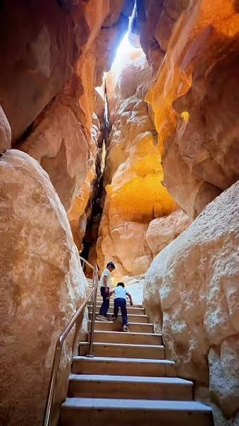

A Huge Palm Oasis
More than 2.5 million palm trees grow here. They get water from natural springs under the ground.
More than 2.5 million palm trees grow here. They get water from natural springs under the ground.
Walk through Souq Al-Qaisariya in Hofuf. You can shop for spices, perfume and handmade crafts.
People have lived in this oasis for thousands of years. It is a UNESCO World Heritage Site.
Al-Qarah is a small mountain full of narrow caves. The caves stay cool even in the hot summer, so they are a great place to explore.

Al-Asfar Lake, also called Yellow Lake, sits between golden sand dunes. Birds stop here twice a year when they migrate.
Read more about Yellow LakeAl-Ahsa is famous for Khalas dates. People often serve these sweet dates with Arabic coffee.
Read more about Khalas datesStart planning your trip to the Al-Ahsa Oasis today.
Plan your visit with the Visit Saudi guide